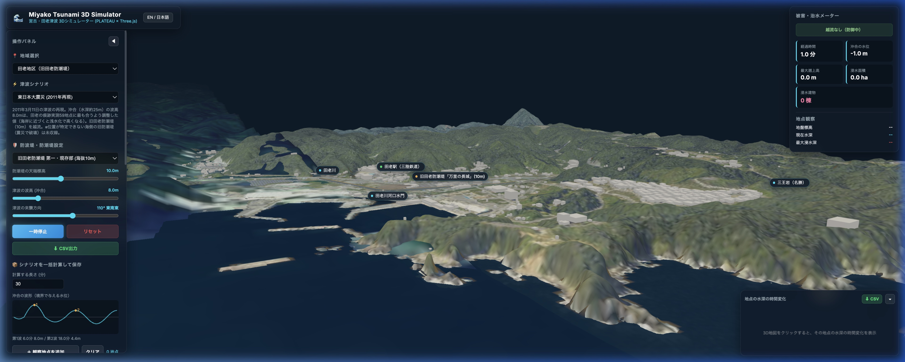
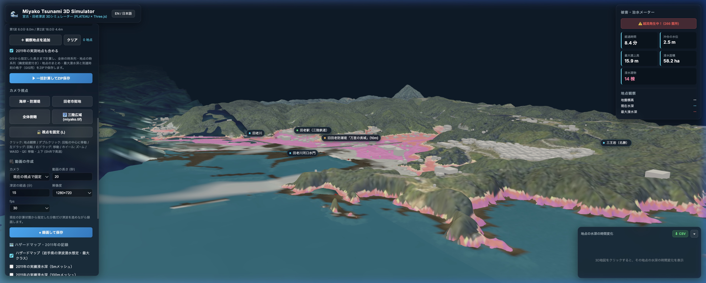

岩手県宮古市・田老地区（旧田老防潮堤・万里の長城）および宮古港・鍬ヶ崎・閉伊川河口域における津波の海岸押し寄せと、旧田老防潮堤の防御機能を観察・解析。国土地理院 5m レーザー標高 (DEM5A) と PLATEAU 3D 都市モデル、浅水変形・越流力学に基づくリアルタイム海洋物理シミュレーションを融合しました。
津波の来襲から海岸浅水変形、防潮堤の越流、市街地浸水、引き波のプロセスを、物理方程式とリアルタイム3Dで直感的に追究できます。

高精度 DEM5A × OSM昭和三陸津波後に築かれた田老地区の第1防潮堤（海抜10.0m）に加え、宮古市最大の市街地・港湾部である宮古港（出崎埠頭・藤原埠頭・鍬ヶ崎・閉伊川河口）の2大エリアを収録。田老の防潮堤は OpenStreetMap と国土地理院DEM5Aの微地形で稜線を整合し、急峻な三陸リアス地形を再現しています（宮古港の防潮堤・水門は位置が特定できないため未収録）。
計算域の沖合境界から、指定した方向の平面波として津波を入射。重茂半島を迂回して宮古湾口から湾奥へ進む津波の浅水変形（Greenの法則）と防潮堤天端の越流をリアルタイムに計算します。波の来襲方向（宮古港では50°中心に左右90度幅、16方位コンパス対応）や波高・周期も自由にカスタム可能です。

実測 & ハザードマップ比較岩手県公表の津波浸水想定ハザードマップ（標準8区分凡例）、復興支援調査アーカイブの宮古市100mメッシュ実績浸水深、さらに5mメッシュ高精度実績データ（再現率・CSI・浸水深RMSEをリアルタイム統計表示）、東日本大震災直後（2011年3月）の地理院空中写真をワンクリックでオーバーレイ表示できます。
広域シミュレーター（nankai_trough等）が出力した時系列波源データCSV（宮古沖・最大波高4.08m）を直接読み込み、市街地への浸水影響をシミュレーション。CSVの水位を沖合境界に与え、流速・流向から来襲方向を自動判定します。地震直後の水位（地殻変動による沈降・隆起）は0に補正し、CSVの地点は地図上にマーカーで表示。水面をクリックして人工波・波紋を起こすインタラクティブな実験機能も搭載。タイマーには「計算時間 (LAP)」と「地震発生後」をリアルタイム併記します。
過去の教訓と未来の防災計画を検証するための、多彩な津波シナリオプリセットを標準搭載。
nankai_troughアプリが出力した宮古沖の時系列波源データを使用。地震発生から約18分で最大波高4.08m（引き波後）が到達し、旧田老防潮堤の防御力と市街地氾濫を精密に検証。
japan.tif の海底地形のもとで、田老地区の実測津波痕跡59地点（信頼度A・B）に最も一致する沖合境界波高（6.5m：差±2m以内20地点・RMSE 3.0m）を設定。田老防潮堤を越流し市街地へ浸水する津波の挙動を再現します。
発生頻度は極めて低いものの甚大な被害をもたらす最大クラスの津波。住民の高台避難や避難路の安全性検証に不可欠なシナリオです。
新田老防潮堤（天端標高 T.P.+14.7m）などの海岸保全施設を設計する際の基準となる津波。防潮堤の防御限界と越流マージンを検証できます。
旧田老防潮堤（10m）が津波を完全に阻止し、田老町が世界にその名を知られるきっかけとなった歴史的津波の防潮プロセスを検証できます。
Web標準技術の極限性能を引き出し、ブラウザおよびネイティブデスクトップで快適に動作するアーキテクチャ。
数万ポリゴンの地形メッシュとPLATEAU建築群、動的津波水面を滑らかな60fpsでGPUレンダリング。低負荷かつフォトリアルな津波表現を実現。
浅水長波方程式の局所慣性モデル（de Almeida et al.）をWeb Worker内で独立並列実行。描画スレッドを一切ブロックせず、長時間のシミュレーションも安定駆動。
Rustベースの極めて軽量・高速なデスクトップランタイム。わずか数十MBの軽量バイナリでオフライン完全動作と高速データ出力を実現。
mp4-muxer とハードウェア支援エンコードにより、キーフレーム補間や旋回カメラの津波シミュレーション動画を最大1920×1080・30fpsでMP4書き出し。
地図上の任意の地点をクリックするだけで時系列水深グラフを表示。経過時間・波高・遡上高・浸水面積・浸水棟数をExcel対応UTF-8 BOM付きCSVで即座に出力。
平面直角座標系第X系（EPSG:6678）とWGS84を変換し、国土地理院5mレーザー標高、japan.tif 海底地形、東日本大震災空中写真、復興支援アーカイブ実績浸水深を同じ座標系で重ね合わせ。
オフライン環境での完全動作、高精度シミュレーション、長時間の動画エクスポート、CSV解析データ出力に対応したデスクトップ専用パッケージ。